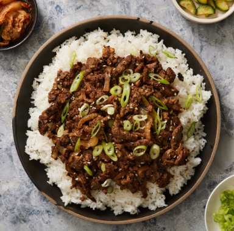

Receitas Simples
Comidas Asiáticas
Bulgogi
Nível: fácil

Ingredientes:
- 300g de alcatra cortada em tiras
- 1/2 cebola
- 2 dentes de alho
- 1 colher de sopa de açúcar mascavo
- 4 colheres de sopa de molho shoyu
- 1 colher de sopa de óleo de gergilim
- 1 cenoura
- 1 colher de sopa de gengibre ralado ou picado
- 2 colheres de sopa de saquê
- Pimenta e sementes de gergilim a gosto
(*) A carne pode ser substituida por grão de bico cozido.
Modo de preparo:
- Coloque em um pote a carne, a cebola e o alho picado, o açúcar, shoyu, óleo de gergilim, gengibre e saquê, e deixe marinando por 1 hora.
- Em uma frigideira coloque as carnes sem o caldo e frite-as. (deixe o caldo reservado)
- Depois de fritas, acrescente a cenoura picada em tiras e o caldo, e espere até cozinhar as cenouras, e pronto!.
- Coloque os ingredientes em uma tigela de arroz cozido quente e pronto!
Voltar para o início.